Las larvas y los adultos de los insectos que presentan metamorfosis completa se alimentan de forma diferente; incluso, en algunos casos, los adultos ni siquiera se alimentan. Busca, al menos dos ejemplos, en los que esto suceda y responde.
a. ¿De qué se alimenta cada uno?
b. ¿Qué ventajas supone este hecho?
Construye una clave dicotómica para clasificar estos insectos.
A. Tipula
B. Mariposa
C. Saltamontes
D. Libélula
E. Pulpo
F. Mejillón
G. Tarántula
H. Ciempiés
Copia en tu cuaderno y relaciona los dos columnas.
Caracol de huerta
Mussel
Pulmones
Filtrador
Artópodos
Equinodermos
Copia y completa la tabla en tu cuaderno. Después, nombra a dos animales cuya respiración responda a las modalidades indicadas.
Moluscos
Artópodos
Equinodermos
Imágenes de invertebrados
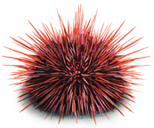
Erizo de mar
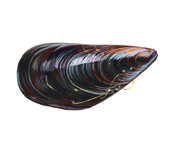
Concha de mejillón
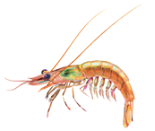
Camarón
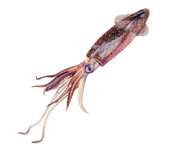
Calamar
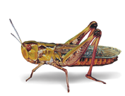
Saltamontes
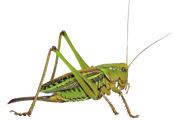
Saltamontes verde
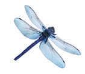
Libélula azul
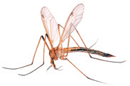
mosquito
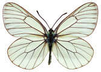
Mariposa
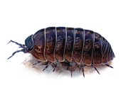
Isópodo
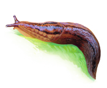
Babosa sobre hoja
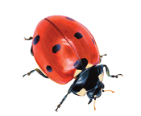
Mariquita